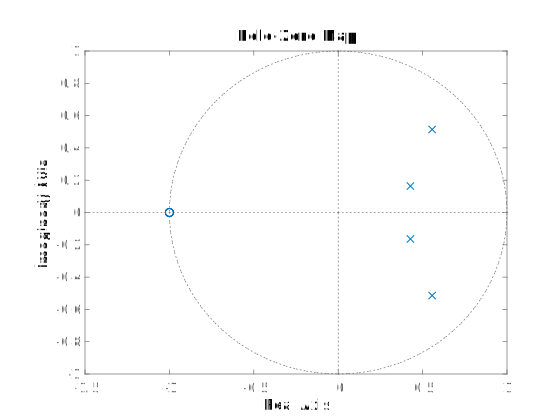
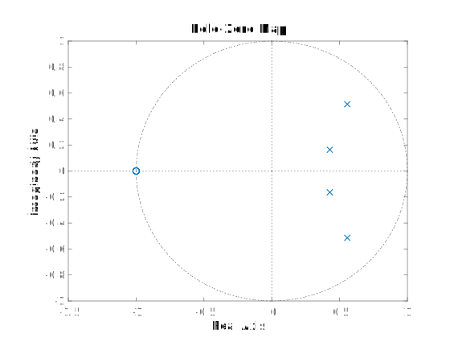
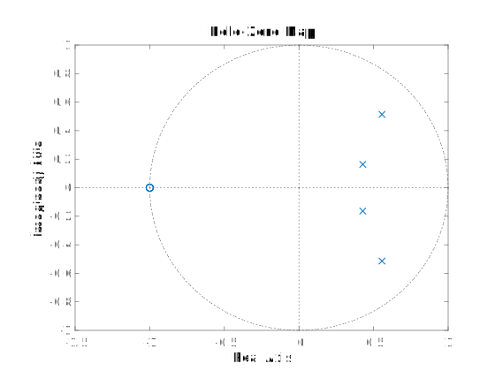
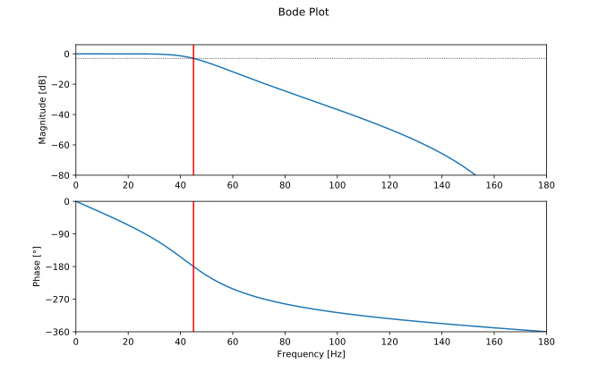
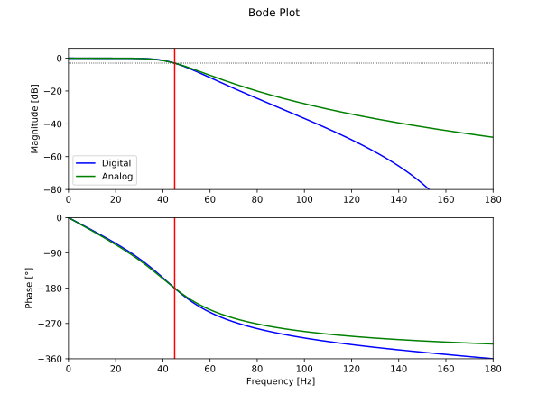

You can see that the corner frequency lies around \(45 \;\mathrm{Hz}\). We can check this mathematically:
$$ A(\omega_{c,d}) = -3.01 \mathrm{dB} $$

You can see that the corner frequency lies around \(45 \;\mathrm{Hz}\). We can check this mathematically:
$$ A(\omega_{c,d}) = -3.01 \mathrm{dB} $$
This is an example on how to design a filter in the analog domain, and then use the bilinear transform to transform it to the digital domain, while preserving the cut-off frequency.
We'll be using formulas derived on the Bilinear Transform and Butterworth Filters pages.
In this example, we'll design a digital fourth order Butterworth low-pass filter, with a sample frequency of \(360 \;\mathrm{Hz}\) and a cut-off frequency of \(45 \;\mathrm{Hz}\).
As discussed in the page on the Bilinear Transform, we have to apply pre-warping to the cut-off frequency before designing a filter. If we don't the cut-off frequency will shift to an incorrect frequency when we discretize the filter.
First, let's calculate the normalized digital frequency \(\omega_{c,d}\), using the cut-off frequency \(f_c\) and the sample frequency \(f_s\): $$ \begin{split} f_c &= 45 \;\mathrm{Hz} \\ f_s &= 360 \;\mathrm{Hz} \\ T_s &= \frac{1}{f_s} \\ \omega_c &= 2\pi f_c \\ &\approx 282.7 \;\mathrm{rad} \;s^{-1} \\ \omega_{c,d} &= \frac{\omega_c}{f_s} \\ &= \frac{\pi}{4} \frac{\mathrm{rad}}{\mathrm{sample}} \approx 0.7854 \frac{\mathrm{rad}}{\mathrm{sample}} \end{split} $$ The Nyquist-Shannon sampling theorem tells us that we can never sample frequencies higher than \(f_s/2\) without losing information. This also means that the cut-off frequency can never be higher than half of the sample frequency. Or in other words, all normalized frequencies will be in the interval \([0, \pi]\).
Next, we'll use the pre-warping formula we derived in the page on the Bilinear Transform, in order to calculate the analog design frequency \(\omega_{c,a}\): $$ \begin{split} \omega_{c,a} &= \frac{2}{T_s}\tan\left(\frac{\omega_{c,d}}{2}\right) \\ &= 720 \tan\left(\frac{\pi}{8}\right) \approx 298.2 \;\mathrm{rad} \;s^{-1} \end{split} $$ Note that this frequency is relatively close to \(\omega_c\), but it is not the same. The higher the cut-off frequency (relative to the sample frequency), the larger the error between \(\omega_c\) and \(\omega_{c,a}\).
Now that we know the pre-warped analog cut-off frequency, we can start designing the analog filter.
We'll use the formula for the Butterworth low-pass filter derived in the page on Butterworth Filters:
$$ \begin{equation} H_4(s') = \frac{1}{B_4(s')} \quad\quad \mathrm{where} \;s' \triangleq \frac{s}{\omega_{c,a}} \end{equation} \label{H} $$
$$ B_4(s') = \left(s'^2 - 2\cos\left(2\pi\frac{4+1}{4\cdot4}\right) s' + 1\right)
\left(s'^2 - 2\cos\left(2\pi\frac{2+4+1}{4\cdot4}\right) s' + 1\right) $$
Defining these constants will make the calculations much easier:
$$ \begin{align}
\begin{split}
\alpha &\triangleq -2\cos\left(\frac{5\pi}{8}\right) \\
&= \sqrt{2 - \sqrt{2}} \\
\end{split} \label{alpha} \\
\begin{split}
\beta &\triangleq -2\cos\left(\frac{7\pi}{8}\right) \\
&= \sqrt{2 + \sqrt{2}}
\end{split} \label{beta}
\end{align} $$
$$ \begin{equation} \begin{split}
B_4(s') &= \left(s'^2 + \alpha s' + 1\right)\left(s'^2 + \beta s' + 1\right) \\
&= s'^4 + s'^3(\alpha+\beta) + s'^2(\alpha\beta+2) + s'(\alpha+\beta) + 1
\end{split} \end{equation} \label{B} $$
We can now just apply the Bilinear Transform to the analog transfer function, by substituting \(s = \frac{2}{T_s}\frac{z-1}{z+1}\).
Therefore:
$$ s' = \frac{2 f_s}{\omega_{a,c}}\frac{z-1}{z+1} $$
Again, we'll introduce a constant to simplify the expression:
$$ \begin{equation} \begin{split}
\gamma &\triangleq \frac{2 f_s}{\omega_{a,c}} = \frac{2f_s}{2f_s\tan\left(\frac{\omega_{c,d}}{2}\right)} = \cot\left(\pi\frac{f_c}{f_s}\right) \\
&= \cot\left(\frac\pi8\right) = 1 + \sqrt2 \end{split} \end{equation} \label{gamma} $$
$$ \begin{equation} s' = \gamma \frac{z-1}{z+1} \end{equation} \label{s_prime_z} $$
What follows is just rearranging the expression of \(B_4(s')\) from Equation \(\ref{B}\), using the substitution of Equation \(\ref{s_prime_z}\).
Finally, we end up with an expression for the transfer function, using Equation \(\ref{H}\), and we can determine the coefficients using the constants
defined in Equations \(\ref{alpha}\), \(\ref{beta}\) & \(\ref{gamma}\).
$$ \begin{split}
B_4(s') \;\;= \;\;& s'^4 + s'^3(\alpha+\beta) + s'^2(\alpha\beta+2) + s'(\alpha+\beta) + 1 \\[1em]
B_4(z) \;\;= \;\;& \gamma^4 \frac{(z-1)^4}{(z+1)^4} \\
& + \gamma^3 \frac{(z-1)^3 (z+1)}{(z+1)^4} (\alpha+\beta) \\
& + \gamma^2 \frac{(z-1)^2 (z+1)^2}{(z+1)^4} (\alpha\beta+2) \\
& + \gamma \frac{(z-1) (z+1)^3}{(z+1)^4} (\alpha+\beta) \\
& + \frac{(z+1)^4}{(z+1)^4} \\[1em]
= \;\;& \frac{1}{(z+1)^4} \left[ \begin{array}[l]
\;&\gamma^4 (z-1)^4 \\
+& \gamma^3 (z-1)^3 (z+1) (\alpha+\beta) \\
+& \gamma^2 (z-1)^2 (z+1)^2 (\alpha\beta+2) \\
+& \gamma (z-1) (z+1)^3 (\alpha+\beta) \\
+& (z+1)^4
\end{array}\right] \\
= \;\;& \frac{1}{(z+1)^4} \left[ \begin{array}[l]
\;& \gamma^4 &(&z^4 &-& 4z^3 &+& 6z^2 &-& 4z &+& 1&) \\
+& \gamma^3 &(&z^4 &-& 2z^3 & & &+& 2z &-& 1&)&(\alpha+\beta) \\
+& \gamma^2 &(&z^4 & & &-& 2z^2 & & &+& 1&)&(\alpha\beta+2) \\
+& \gamma &(&z^4 &+& 2z^3 & & &-& 2z &-& 1&)&(\alpha+\beta) \\
+& &(&z^4 &+& 4z^3 &+& 6z^2 &+& 4z &+& 1&)
\end{array} \right] \\
= \;\;& \frac{1}{(z+1)^4} \left[ \begin{array}[l]
\;&\left(\gamma^4+\gamma^3(\alpha+\beta)+\gamma^2(\alpha\beta+2)+\gamma(\alpha+\beta)+1\right) & z^4 \\
+&\left(-4\gamma^4-2\gamma^3(\alpha+\beta)+2\gamma(\alpha+\beta)+4\right) & z^3 \\
+&\left(6\gamma^4-2\gamma^2(\alpha\beta+2)+6\right) & z^2 \\
+&\left(-4\gamma^4+2\gamma^3(\alpha+\beta)-2\gamma(\alpha+\beta)+4\right) & z \\
+&\left(\gamma^4-\gamma^3(\alpha+\beta)+\gamma^2(\alpha\beta+2)-\gamma(\alpha+\beta)+1\right)
\end{array} \right] \\[1em]
H_{4}(z) \;\;= \;\;& \frac{1}{B_4(z)} \\
= \;\;& \frac{(z+1)^4}{\left[\begin{array}[l]
\;&\left(\gamma^4+\gamma^3(\alpha+\beta)+\gamma^2(\alpha\beta+2)+\gamma(\alpha+\beta)+1\right) & z^4 \\
+&\left(-4\gamma^4-2\gamma^3(\alpha+\beta)+2\gamma(\alpha+\beta)+4\right) & z^3 \\
+&\left(6\gamma^4-2\gamma^2(\alpha\beta+2)+6\right) & z^2 \\
+&\left(-4\gamma^4+2\gamma^3(\alpha+\beta)-2\gamma(\alpha+\beta)+4\right) & z \\
+&\left(\gamma^4-\gamma^3(\alpha+\beta)+\gamma^2(\alpha\beta+2)-\gamma(\alpha+\beta)+1\right)
\end{array} \right]} \\[1em]
\triangleq \;\;& \frac{b_4z^4+b_3z^3+b_2z^2+b_1z+b_0}{a_4z^4+a_3z^3+a_2z^2+a_1z+a_0}
\end{split}
$$
$$ \begin{split}
a_0 \;\;= \;\;& \gamma^4-\gamma^3(\alpha+\beta)+\gamma^2(\alpha\beta+2)-\gamma(\alpha+\beta)+1 \quad\approx 11.79 \\
a_1 \;\;= \;\;& -4\gamma^4+2\gamma^3(\alpha+\beta)-2\gamma(\alpha+\beta)+4 \quad\approx -70.96 \\
a_2 \;\;= \;\;& 6\gamma^4-2\gamma^2(\alpha\beta+2)+6 \quad\approx 170.0 \\
a_3 \;\;= \;\;& -4\gamma^4-2\gamma^3(\alpha+\beta)+2\gamma(\alpha+\beta)+4 \quad\approx -192.8 \\
a_4 \;\;= \;\;& \gamma^4+\gamma^3(\alpha+\beta)+\gamma^2(\alpha\beta+2)+\gamma(\alpha+\beta)+1 \quad\approx 97.95 \\[0.6em]
b_0 \;\;= \;\;& 1 \\
b_1 \;\;= \;\;& 4 \\
b_2 \;\;= \;\;& 6 \\
b_3 \;\;= \;\;& 4 \\
b_4 \;\;= \;\;& 1
\end{split} $$
We can check the filter's frequency response to make sure that we didn't make any mistakes.
As mentioned in other pages, the frequency response of a digital system can be a obtained by evaluating the
transfer function \(H(z)\) along the unit circle (\(z=e^{j\omega}\)). We'll plot the magnitude in decibels.
$$ A(\omega) = 20 \log_{10}\left|H\left(e^{j\omega}\right)\right| $$
We can also plot the phase angle of the response:
$$ \phi(\omega) = \angle H\left(e^{j\omega}\right) $$

You can see that the corner frequency lies around \(45 \;\mathrm{Hz}\). We can check this mathematically:
$$ A(\omega_{c,d}) = -3.01 \mathrm{dB} $$
If you have to design many different filters, you don't want to calculate them all by hand. Luckily, MATLAB and GNU Octave come with a command to calculate the coefficients of Butterworth filters.
Note that MATLAB expects the normalized frequency as a number from 0 to 1, so we have to divide by \(\pi\) before passing it to thef_s = 360; % Sample frequency in Hzf_c = 45; % Cut-off frequency in Hzorder = 4; % Order of the butterworth filteromega_c = 2 * pi * f_c; % Cut-off angular frequencyomega_c_d = omega_c / f_s; % Normalized cut-off frequency (digital)[b, a] = butter(order, omega_c_d / pi); % Design the Butterworth filterdisp('a = '); disp(a); % Print the coefficientsdisp('b = '); disp(b);H = tf(b, a, 1 / f_s); % Create a transfer functionbode(H); % Show the Bode plot
butter function.
A similar function is available in the SciPy signal package:
butter.
from scipy.signal import butter, freqz, freqsimport matplotlib.pyplot as pltfrom math import piimport numpy as npf_s = 360 # Sample frequency in Hzf_c = 45 # Cut-off frequency in Hzorder = 4 # Order of the butterworth filteromega_c = 2 * pi * f_c # Cut-off angular frequencyomega_c_d = omega_c / f_s # Normalized cut-off frequency (digital)# Design the digital Butterworth filterb, a = butter(order, omega_c_d / pi)print('Coefficients')print("b =", b) # Print the coefficientsprint("a =", a)w, H = freqz(b, a, 4096) # Calculate the frequency responsew *= f_s / (2 * pi) # Convert from rad/sample to Hz# Plot the amplitude responseplt.subplot(2, 1, 1)plt.suptitle('Bode Plot')H_dB = 20 * np.log10(abs(H)) # Convert modulus of H to dBplt.plot(w, H_dB)plt.ylabel('Magnitude [dB]')plt.xlim(0, f_s / 2)plt.ylim(-80, 6)plt.axvline(f_c, color='red')plt.axhline(-3, linewidth=0.8, color='black', linestyle=':')# Plot the phase responseplt.subplot(2, 1, 2)phi = np.angle(H) # Argument of Hphi = np.unwrap(phi) # Remove discontinuitiesphi *= 180 / pi # and convert to degreesplt.plot(w, phi)plt.xlabel('Frequency [Hz]')plt.ylabel('Phase [°]')plt.xlim(0, f_s / 2)plt.ylim(-360, 0)plt.yticks([-360, -270, -180, -90, 0])plt.axvline(f_c, color='red')plt.show()
We can easily plot the Bode plots of the two filters on top of each other, in order to compare their properties.
from scipy.signal import butter, freqz, freqsimport matplotlib.pyplot as pltfrom math import piimport numpy as npf_s = 360 # Sample frequency in Hzf_c = 45 # Cut-off frequency in Hzorder = 4 # Order of the butterworth filteromega_c = 2 * pi * f_c # Cut-off angular frequencyomega_c_d = omega_c / f_s # Normalized cut-off frequency (digital)# Design the digital Butterworth filterb_d, a_d = butter(order, omega_c_d / pi)print('Digital Coefficients')print("b =", b_d) # Print the coefficientsprint("a =", a_d)w, H_d = freqz(b_d, a_d, 4096) # Calculate the frequency responsew *= f_s / (2 * pi) # Convert from rad/sample to Hz# Design the analog Butterworth filterb_a, a_a = butter(order, f_c, analog=True)print('Analog Coefficients')print("b =", b_a) # Print the coefficientsprint("a =", a_a)w, H_a = freqs(b_a, a_a, w) # Calculate the frequency response# Plot the amplitude responseplt.subplot(2, 1, 1)plt.suptitle('Bode Plot')H_d_dB = 20 * np.log10(abs(H_d)) # Convert modulus of H to dBH_a_dB = 20 * np.log10(abs(H_a))plt.plot(w, H_d_dB, color='blue', label='Digital')plt.plot(w, H_a_dB, color='green', label='Analog')plt.legend()plt.ylabel('Magnitude [dB]')plt.xlim(0, f_s / 2)plt.ylim(-80, 6)plt.axvline(f_c, color='red')plt.axhline(-3, linewidth=0.8, color='black', linestyle=':')# Plot the phase responseplt.subplot(2, 1, 2)phi_d = np.angle(H_d) # Argument of Hphi_a = np.angle(H_a)phi_d = np.unwrap(phi_d) * 180 / pi # Remove discontinuitiesphi_a = np.unwrap(phi_a) * 180 / pi # and convert to degreesplt.plot(w, phi_d, color='blue')plt.plot(w, phi_a, color='green')plt.xlabel('Frequency [Hz]')plt.ylabel('Phase [°]')plt.xlim(0, f_s / 2)plt.ylim(-360, 0)plt.yticks([-360, -270, -180, -90, 0])plt.axvline(f_c, color='red')plt.show()